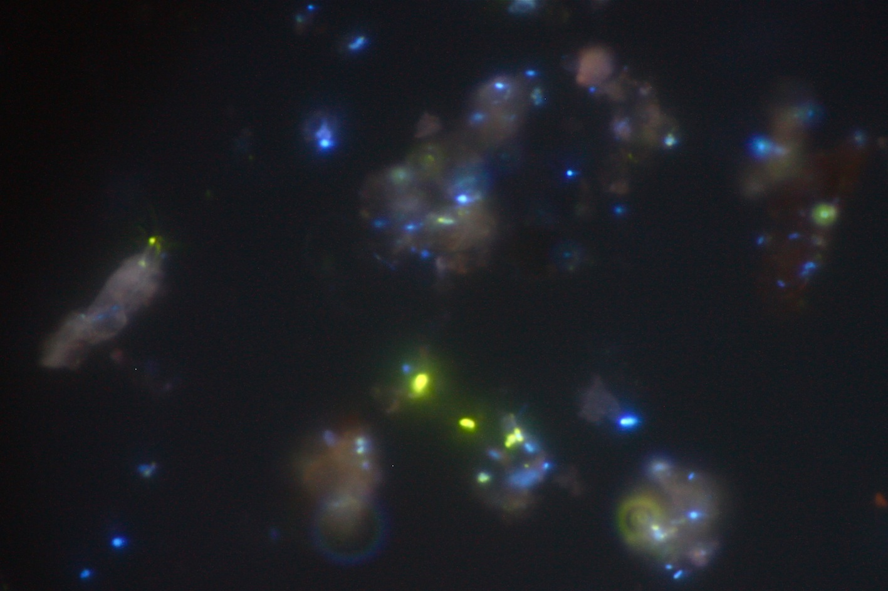
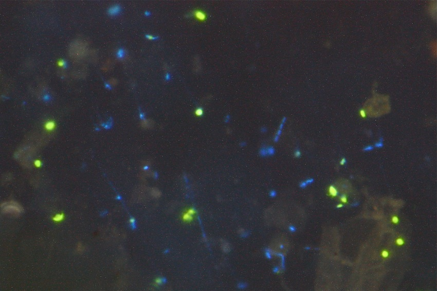
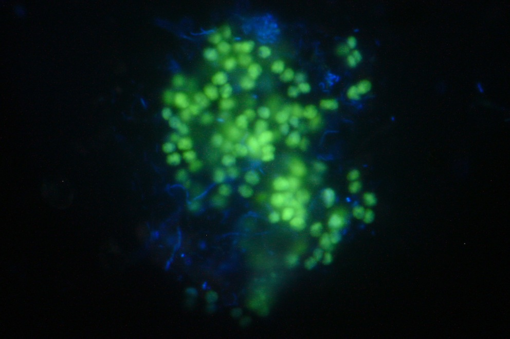
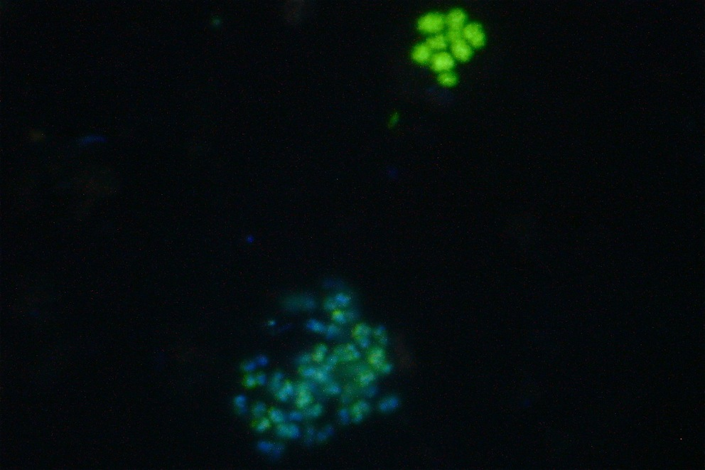
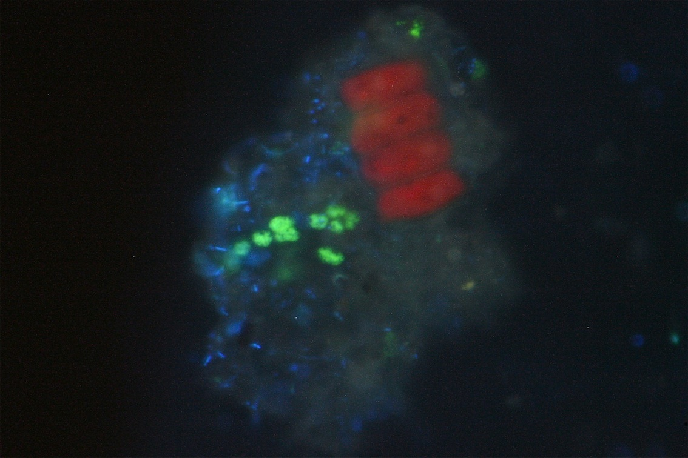
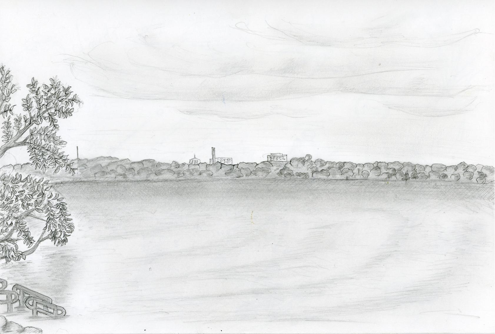
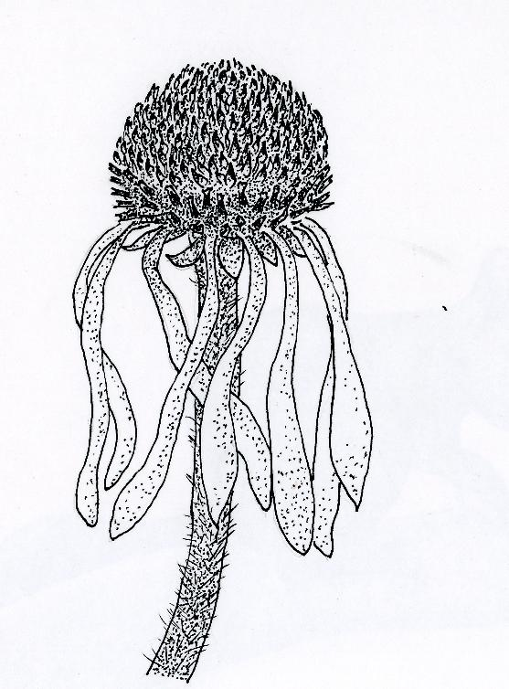
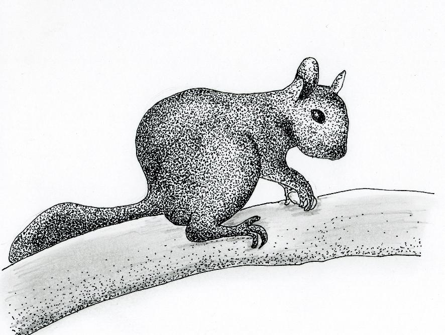
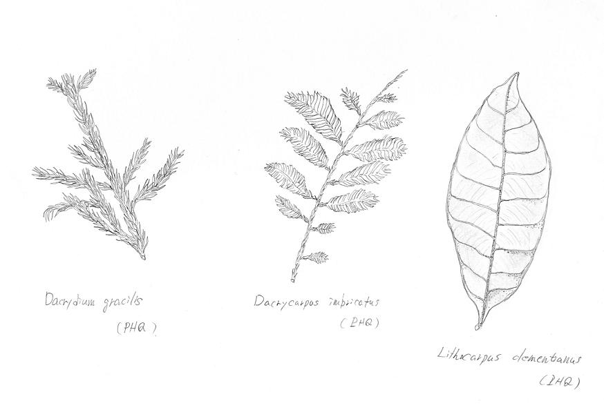
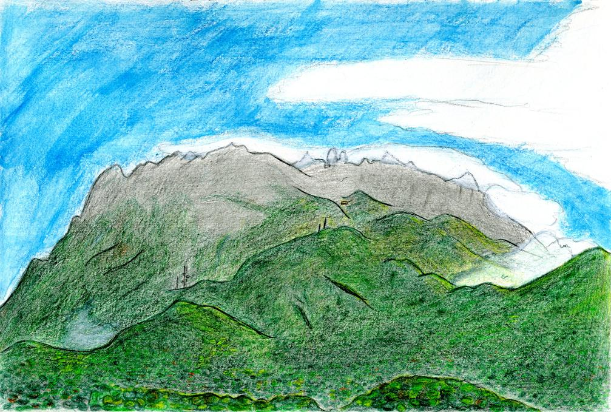

English / Japanese
Masayuki Ushio's Website
Microbe Pictures (CARD-FISH)
*Image scales are approximately 40-60 um × 60-80 um. Brightness and contrast of the pictures are slightly modified to improve their appearance.

↑Archaea in tundra soil (Sep. 2011, Sweden).

↑Alpha-proteobacteria in pond sediment (Aug. 2012, Japan).

↑Archaea in pond sediment (Aug. 2012, Japan)

↑Archaea in pond sediment (Aug. 2012, Japan)

↑Archaea in pond sediment (Aug. 2012, Japan)
Picture
Oikedake (May, 2008, Mie Pref. JAPAN）

Lake Mendota （June, 2008, Wisconsin, USA）

Pale Purple Coneflower （June, 2008, Wisconsin, USA）

Squirrel （July, 2008, Wisconsin, USA)

Three Research Tree Species on Mt. Kinabalu (Feb, 2009, Sabah, MALAYSIA)

Mt. Kinabalu (March, 2009, Sabah, MALAYSIA)
